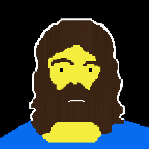

Need a simple way of finding out what frequency a sound is in real time? Already have a project that uses the Web Audio API? What's the Frequency Dennis? is just the thing.
You can just connect What's the Frequency Kenneth? just as you would any other Audio Node, with the side-effect of having a nice oscilloscope that you can control the look of.
The best way to start using What's the Frequency Dennis? is to grab it from GitHub
What's the Frequency Dennis? relies on a couple of things, namely:
Firsty, you'll need to reference Raphael and Wavy Jones after downloading them by doing something like this:
<script src="raphael-min.js"></script>
<script src="/wavy-jones.js"></script>
You'll want somewhere to show your oscillator, so just create and empty div and give it an id like so:
<div id="oscilloscope"></div>
Don't forget get to give it a height and width!
<style>
#oscilloscope {
width: 400px;
height: 200px;
}
</style>
Wavy Jones is basically a normal Audio Analyser node wearing a sparkly jacket. This means you can connect it up just like you would any other audio node.
var context = new webkitAudioContext(),
sineWave = context.createOscillator(),
myOscilloscope = new WavyJones(context, 'oscilloscope');
sineWave.connect(myOscilloscope);
myOscilloscope.connect(context.destination);
sineWave.noteOn(0);
It's easy to customise Wavy. You can change the thickness and colour of the line by doing something like this:
oscilloscope.lineColor = '#EE0000'; oscilloscope.lineThickness = 3;
Super.
No problem, just give me a shout on Twitter.